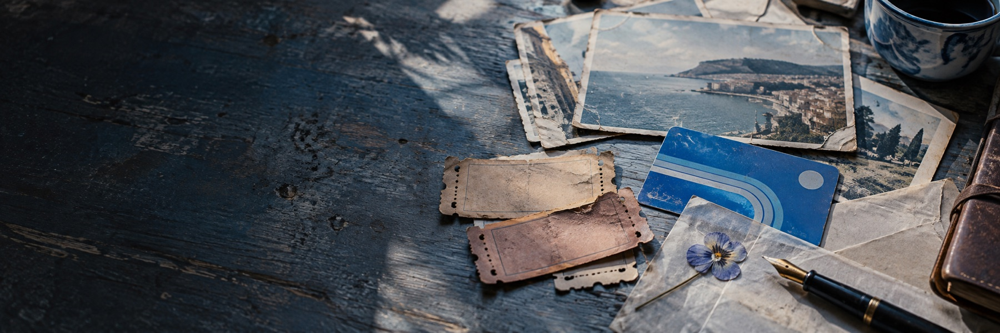

SAMPLE ENTRY / DATE TO ADD
An old ticket is only paper until it brings back the sound of a station, the weather outside, and the person I was on that day.
I have kept objects that would make little sense to anyone else: a postcard with no message, a receipt folded into a book, a map softened at the edges. They do not explain what happened. They simply make it easier to remember.

Maybe an archive is less about holding on to every moment and more about choosing a few small doors back into them. I can open one, stay for a while, then return to the day in front of me.
This is demo writing. Add your own objects, memories, and photographs here.